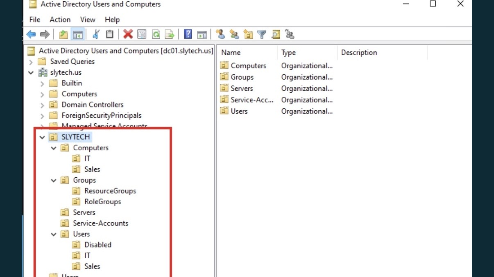
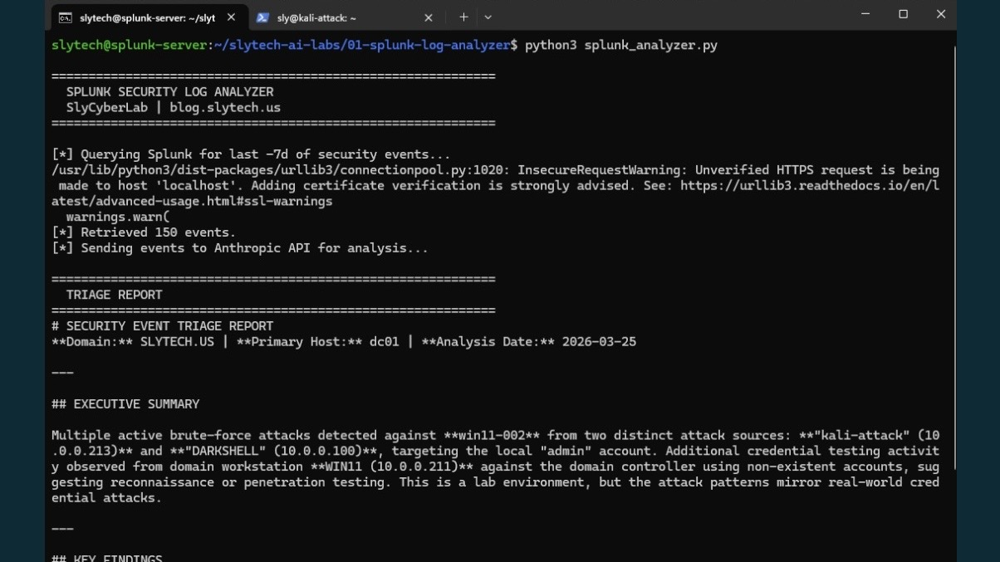
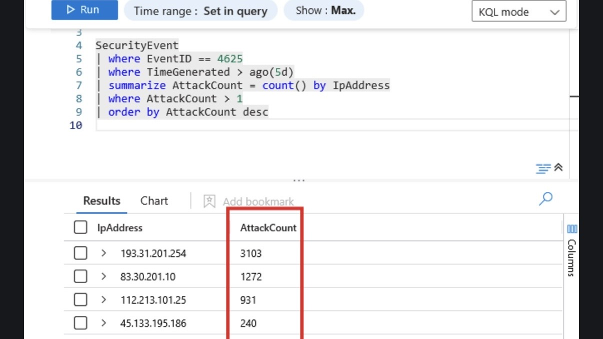
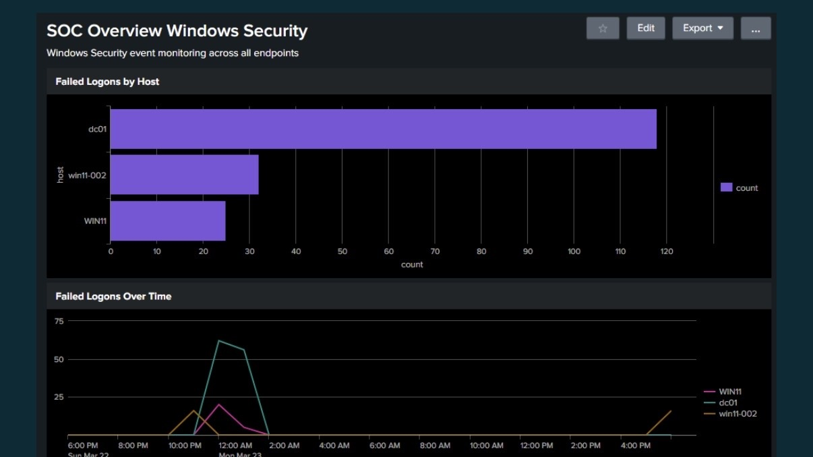
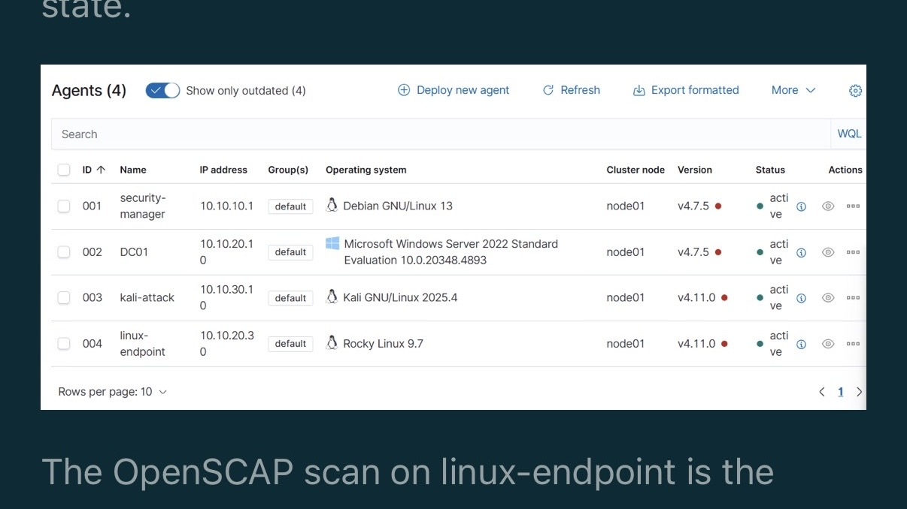
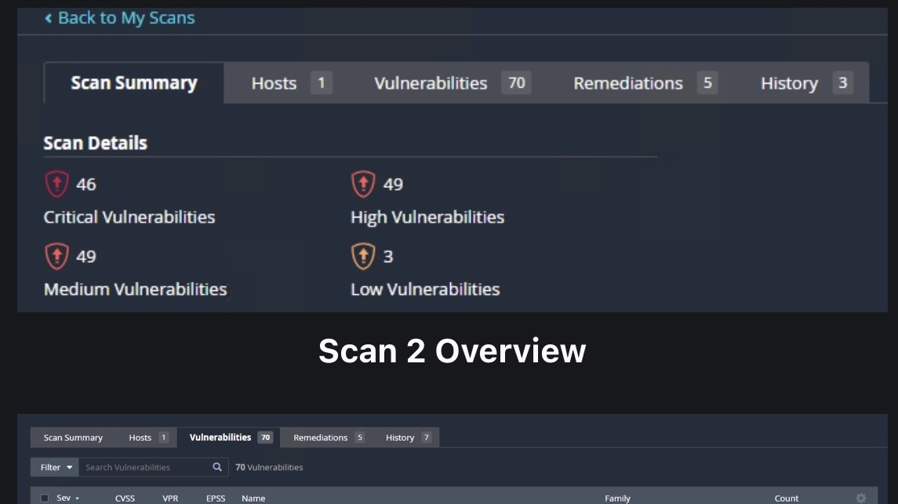
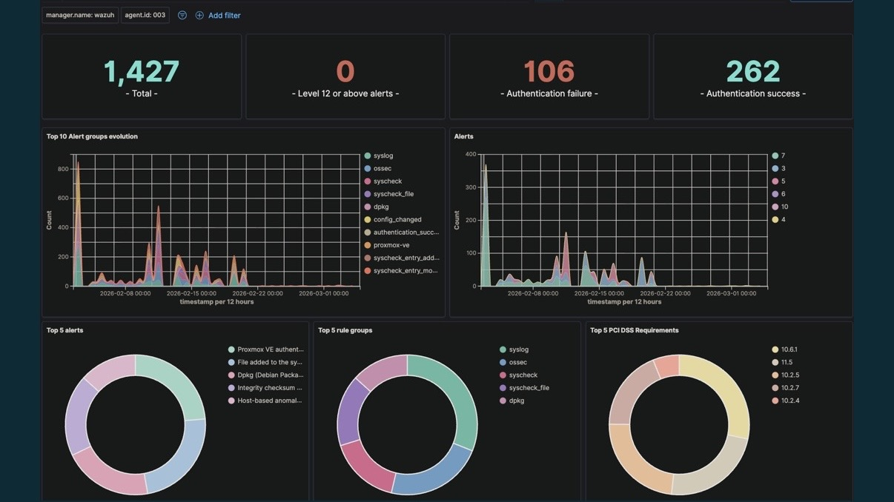

CompTIA Security+
Certified — September 2024

BLOG POSTProvisioning, deprovisioning, quarterly access reviews, and GPO enforcement. Scripted in PowerShell with timestamped audit logs and manager-ready CSV output.

GITHUB + BLOGPython tool combining Splunk REST API and Anthropic API. Detected four attack patterns including T1110.001 brute force and T1087 account enumeration from real lab data.

GITHUBMicrosoft Sentinel with custom KQL detection queries and automated incident response. Honeypot captured 6,000+ live attack attempts mapped to MITRE ATT&CK.

BLOG POST3-part series: Universal Forwarder deployment, SPL correlation searches, CIM normalization, and MITRE ATT&CK detection rules with Security Essentials.

BLOG POSTFull compliance lifecycle on Proxmox: pfSense VLAN segmentation, Wazuh SIEM, OpenSCAP remediation, GPO hardening, and live attack simulation.

GITHUBTenable Nessus Professional on Azure with automated scheduling, CVSS risk scoring, and NIST and CIS framework mapping with full remediation workflow.

BLOG POSTDeployed Wazuh on Ubuntu with agents on Windows and Linux endpoints. Configured custom detection rules, active response, and GPO hardening on the slytech.us domain.
 GITHUB
GITHUB
Multi-VLAN network segmentation with enforced firewall policies, traffic filtering, and access control rules across management, server, workstation, and DMZ zones.
All projects documented with build notes, troubleshooting, and real lab data at blog.slytech.us
Open to infrastructure, security, cloud, and identity roles. I build production-grade labs, automate workflows, and document everything publicly at blog.slytech.us.